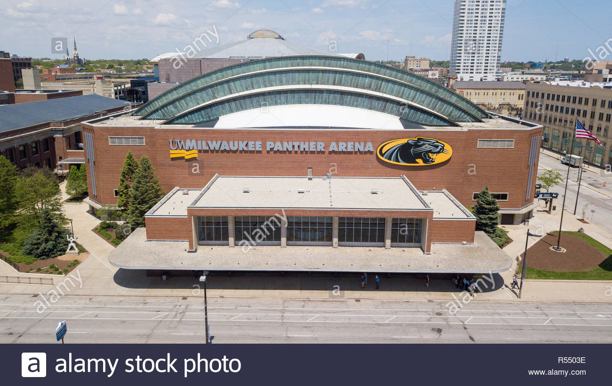
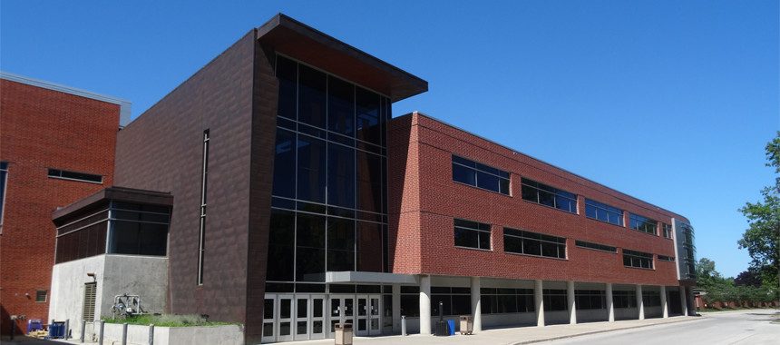

The Assignment
Demonstrate an understanding of Adobe Illustrator through the use of aligning and distributing shapes, composing new shapes with Pathfinder, and the management of colors. Create four icons that follow a unifying theme and display a cohesive aesthetic.
Specific workflows that should be demonstrated through the works include Align/Distribution, Shape Modes, Pathfinder, Color Management, and developing a cohesive Aesthetic.
The file had to be 11 inches by 17 inches at 300ppi. RGB color mode and no bleed were required as well. Copyrighted imagery was allowed for the sole usage as a reference photo.
The archetype for the icons that I created was basketball arenas in the state of Wisconsin. The established aesthetic for each icon featured a 3pt black stroke, and a limited color palette reflecting the title tenant of each venue. Various tints and shades of these colors were used to provide depth or difference.
The first icon was of the Fiserv Forum; the newest basketball arena in Wisconsin. The color palette consists of the offical colors of the Milwaukee Bucks; Green, Blue, and Cream. Due to the unusual roof, I did use the pen tool to best recreate this non-circular curve. From there, I used the line tool and the rectangle tool to draw the remainder of the arena's facade. Light tweaks in the largest rectangle with the pen tool was used to fill behind the swooping roof.
The second icon is the MECCA (UWM Panther Arena). The Mens Basketball team for UWM plays here, so the color palette consists of the Black and Gold tints and shades. The base structure was created from the rectangle tool the line tool. The radial roof was created through the usage of pathfinder. I first drew a circle (elipse tool); and subtracted from it with a rectangle. I repeated this three times to create the three 'rings' of the roof.
The third icon is the Klotsche Center. All other UWM athletics play at this arena, including the Womens Basketball team. This icon uses the same color palette as the MECCA, and is entirely drawn with the usage of the rectangle tool and the line tool. For the gold roof piece, I layered two rectangles that were ofset - and subtracted them via Pathfinder. From there, I adjusted one point with the direct select tool to create a slight slant.
The last icon is of the Kohl Center, home of the Wisconsin Badgers. Their colors involve a cardinal red and white. Majority of this figure was created with the layering of rectangles and lines; with one oval shape (created from the elipse) to represent the iconic UW-Madison emblem on the left face of the building. I also included a rectangle with no stroke across the top to represent the red 'Kohl Center' signage.

MECCA (UWM Panther Arena)
CLOSE

Klotsche Center
CLOSE
These icons mimic the facades of some of Wisconsin's basketball arenas. These icons are a direct remediation of the real-life photos, however the unique architeture of each are preseved in the icons.
Various images were used from Google Images. The images shown here are the ones that I referenced the most and provided the most detail. I also referenced Google Streetview for additional angles of these buildings.